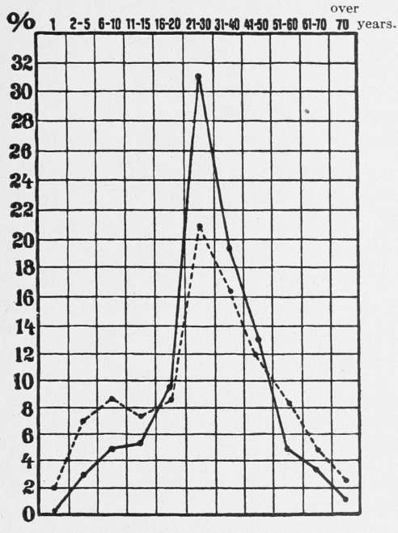

Influence Of Age, Sex, And Occupation
Description
This section is from the book "Malaria, Influenza And Dengue", by Julius Mennaberg and O. Leichtenstern. Also available from Amazon: Malaria, influenza and dengue.
Influence Of Age, Sex, And Occupation
No age can be said to confer immunity against influenza. In spite of the contradictory statements regarding age incidence, it would appear, from the majority of opinions of physicians and from the statistics, that the following statements may be taken as correct:
1. Children at the breast were affected to a much less degree than all other ages.* There is not much foundation for the very general opinion that influenza at this age occurs in so mild a form as to remain unobserved, and is consequently not included in the morbidity statistics.
2. School age, adolescence, and middle life are the periods especially and almost equally affected by the disease. The years from twenty to forty, however, show the greatest incidence.
3. Old age, reckoned from fifty upward, is distinguished by a lessened morbidity.
The established statistical fact of the frequent affection of schoolchildren is probably explained by the fact that the school is a principal focus for the distribution of contagious diseases. The statement that in some, usually small, places the "children" were affected earlier or even exclusively, or that during childhood showed the greatest incidence, is to be found in reference to both the earlier and the more recent epidemics. In most of these cases of this sort probably the school epidemics gave the impression of greater liability of children.
Yet infants are not entirely immune. In the lying in hospital at Giessen, during the epidemic of 1890, 8 out of 20 infants became affected by influenza (Strassmann), and in the literature many cases are reported where infants had influenza at birth, which seems to point to intrauterine infection (?).
In February, 1891, in a few places in the district of Minister, influenza attacked school children especially. At Standish, in England, the epidemic began in October, 1891, beginning among children, and in a few days affected 100 of them; not until November were the adults attacked. A similar example has been previously mentioned. It is questionable whether the disease was true influenza. With even greater skepticism do we regard the reported observations that children and infants at the breast and very small children were specially affected.
The accompanying age curve (Fig. 38) shows the relative ages of patients affected by influenza in Munich in the year 1889-1890 in 22,972 cases. The continuous line shows the percentage attacked at any age; the dotted line shows how many per 100 inhabitants of
* " Children in general escape; i have heard of no child at the breast having it" (Campbell, Mease, Kirkland, and others, 1782). "Les enfants du premier age en ont paru a peu pres exempts" (Vicq d'Azyr, 1782). Babies in the maternity institutions at St. Gall, Basel, Aarau, Zurich were not affected by influenza, in spite of the fact that they were nursed by influenza affected mothers (F. Schmid).
Munich belonged to the age in question. (Based on the census of 1885.)
This Munich curve justifies what we have briefly mentioned in regard to age. The carefully compiled statistics in regard to age, made by the doctors in Hesse and the district of Mainz, and the Swiss statistics of F. Schmid, also bear out these statements.
In opposition to the above almost universally accepted opinion of the special predisposition of adolescents to influenza are the statistics of the German and English armies. The former had a morbidity of 10 per cent.; the latter, of only 6.2 per cent. Several Prussian garrisons (5 per cent.) and numerous English ones (27 per cent.) were not affected by influenza at all, although of the latter many were situated in the midst of severely infected cities. It is further noteworthy that the German army report especially mentions that in the large majority of German cities the military was affected much later by influenza than the civil population. The same condition of affairs prevailed in France (Arnould). Friedrich explains this exceptional condition by the " usually slight communication" between these two classes of the population. But this circumstance should have been more than compensated for by the aggregation, in barracks, of large numbers of people of the predisposing age.
Fig. 38.
As regards sex, there is no difference of predisposition. The occasional statistical differences that occur are explicable on other grounds. It is evident that the male sex, having more intercommunication, would show a larger number of cases than the female, who stay more at home, and that the family more often caught the disease from the father than the mother. Parsons' reports give many examples of this. On the whole, probably more men were affected by the disease than women, and this, like many other points, was the result of greater intercommimication.
As regards constitution, the statement that the robust, healthy individuals were chiefly attacked is confirmed by the age curve given above.
The influence of occupation on the risk of infection depended simply on the liability of contact with infected individuals arising from that particular occupation. Many observers state that doctors furnished an exceptionally large contingent of influenza cases. But there are no statistics on the large scale to prove this.
When this question was discussed at the Medical Society in Cologne in 1890, after the epidemic it appeared that among 33 physicians present, 14 had had influenza, viz., 42.4 per cent., about the same as the general influenza morbidity of Cologne. The investigation, by Eichhorst, in Zurich, showed that among 50 doctors who were present at a meeting upon the first of February, 1890, 37, or 74 per cent., had had influenza.
A further example to those already produced is the following: A count was made in the Medical Society of Hamburg, as well as in Cologne and Zurich. Among the 108 physicians present at the meeting on February 11, 1890, 50 had influenza, while 58 remained exempt. So that in Hamburg, too, the percentage (46) is the same as that of the general influenza morbidity of this city.
Continue to:
- prev: Morbidity And Mortality. Part 3
- Table of Contents
- next: Influence Of Age, Sex, And Occupation. Continued
Tags
mosquito, malaria, influenza, dengue, symptoms, outbreaks, diseases, hemoglobinuria, infections